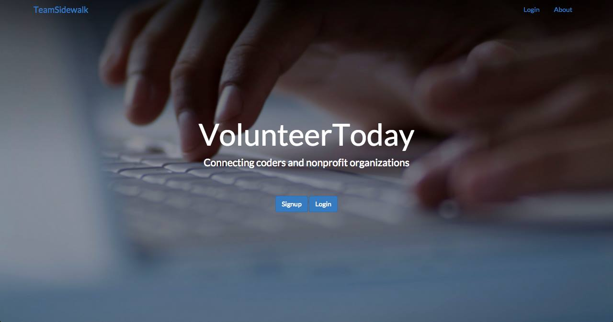

Team Sidewalk
Our Idea
We wanted to start creating a platform to connect volunteers who have technical skills with non-profits who have projects they need people for.



Initial Plan
- Use a Flask backend with a simple Bootstrap front-end
- Create two profiles: non-profit and volunteer
- Allow volunteers to describe their skill sets as well as interests
- Use ProPublica API to gather information regarding the non-profit in question
- Allow volunteers to set their goals for how many hours they want to volunteer
Technical Challenges
So many
Next Steps
- More complete prototype
- Connect our pieces together
- Integrate more data to show the health of the non-profit
- Volunteer dashboard shows a receipt of the hours worked or monetary donation made
- A button that will send an email to HR to ask them to match the donation or hours worked